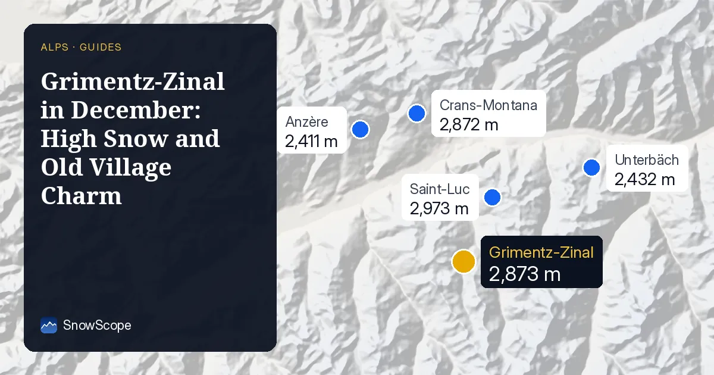

غريمنز-زينال في دجنبر: التلج العالي وجمال القرية القديمة
غريمنز وزينال هما جوج قريات تاريخيين مربوطين بتليفريك باش يشكلو محطة وحدة ديال التلج. إلا كنت كاتقلب على رحلة اقتصادية في دجنبر 2026، هاد البلاصة في سويسرا كاطّي فرصة زوينة ديال التلج المضمون في العلو والجو التقليدي.
شوف توقعات التلج مباشرة ديال Grimentz-Zinal فالتطبيق ديال SnowScopeالعلو ديال التلج، التنبيهات والخريطة 3D، فابور.
جوج قريات، محطة وحدة
المحطة المرسومة فيها 71 كم ديال البيستات و23 مصعد. تقدر تحرك بين جوج قريات بسهولة باستعمال نظام التليفريك. المصعد العالي كيوصل لـ 2873 م، بينما المصعد التحتاني كاين في 1552 م. هادشي كيعطيك فرق في العلو ديال 1321 م باش تكتشفه.

العلو ديال التلج في دجنبر بالأسัปوع
التاريخ ديالنا ديال التلج على مدى 46 شتوة فاتت كيبين بلي التلج في تحت المصاعد كيكون قليل في الأول ديال دجنبر. في دجنبر العادي، القاعدة كيكون فيها 27 cm ديال التلج. ولكن النسبة ديال الشتوات اللي فيهوم 30 cm أو كتر في القاعدة كتزاد مع الوقت، وكترتفع من 17 % في الأسبوع الأول حتى لـ 63 % في الأسبوع الأخير من دجنبر.
في نص الجبل، 2212 م، الظروف كاتكون ثابتة كتر. العلو المعتاد في دجنبر هو 44 cm. في 85 % من الشتوات اللي فاتو، غادي تلقى 30 cm أو كتر ديال التلج بين 15-21 دجنبر. في الفوق ديال المصاعد، 2873 م، التلج مضمون بزاف. في 100 % من الشتوات اللي فاتو، كيكون 30 cm أو كتر ديال التلج وسط الشهر.
إلا شفتي الاتجاهات البعيدة، المعدل ديال دجنبر في الفوق كان 99 cm في الـ 15 شتوة الأولى، من 1980-81 حتى 1994-95، و92 cm في الـ 15 شتوة الأخيرة، من 2011-12 حتى 2025-26. وكأنشوفو عتاني بلي أقل دجنبر تسجل فيه التلج في الفوق كان 34 cm في موسم 2015-16، بينما أكبر علو كان 175 cm في 1982-83.
ثمن الباس
تتقدر تشري باص ديال يوم واحد للكبار لـ Val d'Anniviers بـ CHF 75,00. إلا كنت ناوي تبقا كتر، باص ديال 6 أيام للكبار لـ Val d'Anniviers كيسوى CHF 339,00. هاد الأثمنة صحيحة لموسم الشتاء 2026-27 وكغطيو غريمنز-زينال، St-Luc Chandolin، وVercorin.
غريمنز-زينال ضد St-Luc Chandolin
منين نقارنو بيناتهوم، St-Luc Chandolin فيها محطة فيها 56 كم ديال البيستات و18 مصعد مرسوم. المصعد العالي ديالها كاين في 2973 م، اللي هو طالع كتر من 2873 م ديال الفوق في غريمنز-زينال. العلو المعتاد في دجنبر في الفوق ديال St-Luc Chandolin هو 110 cm، مقارنة بـ 99 cm في غريمنز-زينال.
في القاعدة، St-Luc Chandolin كاينا في 1682 م وعندهَا علو معتاد في دجنبر ديال 38 cm. القاعدة ديال غريمنز-زينال هابطة على 1552 م، وهادشي اللي كيشرح علاش التلج قليل فيها في الأول ديال الشهر. جوج المحطات كيتشاركو نفس الثمن ديال باص Val d'Anniviers.
شكون خاصه يختارها في دجنبر
غريمنز-زينال اختيار زوّين إلا عجبك التزلج في العلو فين التلج كيكون مضمون بزاف. ابتداءً من 13 نونبر 2026، التلج دابا هو 0 cm في القاعدة، 1 cm في نص الجبل، و1 cm في الفوق. التوقعات ديال التلج الجديد ديال جوج سيمانات لنص الجبل والفوق كيتوقعو ما بين 63 cm و108 cm، مع قيمة وسطية ديال 86 cm.
إلا سافرت في الأول ديال دجنبر، ركز وقتك على الجهة الفوقانية ديال الجبل. البيستات التحتانيين صالحين كتر للسيمانات اللي قريبة لنخاية الشهر منين تكون القاعدة ديال التلج خدات وقت كتر باش تجمع.
نصايح للي كيتزلجو
- زور المحطة في الأسبوع الأخير من دجنبر باش تكون عندك أحسن فرصة باش تلقى 30 cm أو كتر ديال التلج في قاعدة المصاعد.
- دوز وقتك في الفوق ديال المصاعد، 2873 m، فين التلج مضمون حتى في السنوات اللي فيها التلج قليل.
- شوف النشرة ديال الانهيارات قبل ما تمشي خارج البيستات، حيت الظروف كاتببدل بسرعة في بلايص العلو العالي.
- حجز الباس ديال 6 أيام ديال Val d'Anniviers في الموقع الرسمي باش توجد للرحلة ديالك.
خرائط أخرى (مواقع خارجية)
المراجع والمصادر
- Val d'Anniviers tourism, official ski pass prices 2026-27 www.valdanniviers.ch/fr/Z33617/tarifs-ski-grimentz-zinal
- SnowScope, December snow at three heights and today's snow map snowscope.app/
على هاد الأرقام
الأرقام ديال التلج: التاريخ ديال التلج ديال SnowScope، 46 شتوة اللي فاتت (1980-81 حتى ل 2025-26) فتلاتة ديال العلوات فكل محطة (موديل ديال اللي فات مصحح بالعلو: تقدير لمنطقة، ماشي قياسات ديال المحطة)؛ أرقام دجنبر محسوبة من العلو اليومي ديال التلج فهاد الشتوات. التلج دابا والتوقعات ديال جوج سيمانات: توقعات SnowScope (من ECMWF و GFS، مجال ماشي وعد). التيليسييجات والبيستات: الخريطة ديال OpenSkiMap. الأثمنة: الصفحات الرسمية اللي لتحت، متشافة نهار 2026-11-13؛ الأثمنة تقدر تتبدل، شوف قبل ما تحجز.
النشرات الرسمية ديال الانهيارات: SLF – WSL Institute for Snow and Avalanche Research
كيفاش تستاشهد بهاد المقال
للبحث، التعليم ولا الصحافة: الأرقام والرسومات تقدر تعاود تخدم بيهم بحرية تحت CC BY 4.0 مع هاد الاستشهاد.
SnowScope (2026), غريمنز-زينال في دجنبر: التلج العالي وجمال القرية القديمة, https://snowscope.app/blog/ar/2026/11/grimentz-zinal-december-ski-snow-and-cost-2026.html, تشاف ف 2026-11-14
SnowScope (Atlas Labs). (2026, November 14). غريمنز-زينال في دجنبر: التلج العالي وجمال القرية القديمة. SnowScope snow reports. https://snowscope.app/blog/ar/2026/11/grimentz-zinal-december-ski-snow-and-cost-2026.html
BibTeX
@misc{snowscope2026grimentzzinaldecemberski,
author = {{SnowScope (Atlas Labs)}},
title = {غريمنز-زينال في دجنبر: التلج العالي وجمال القرية القديمة},
year = {2026},
month = nov,
howpublished = {\url{https://snowscope.app/blog/ar/2026/11/grimentz-zinal-december-ski-snow-and-cost-2026.html}},
note = {Published 2026-11-14 13:31 UTC; accessed 2026-11-14}
}· CC BY 4.0 · الطريقة، الداتا والأدوات →
Grimentz-Zinal: التلج والحرارة حسب العلو، هاد الشتا مقارنة مع اللي فاتت (الأدوات) →
تابع Grimentz-Zinal
فابور: ميساج ملي يجي التلج، والتوقعات كل صباح.